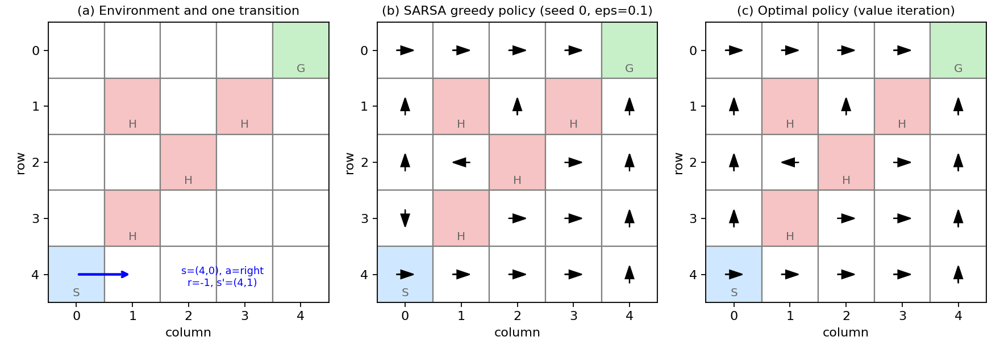
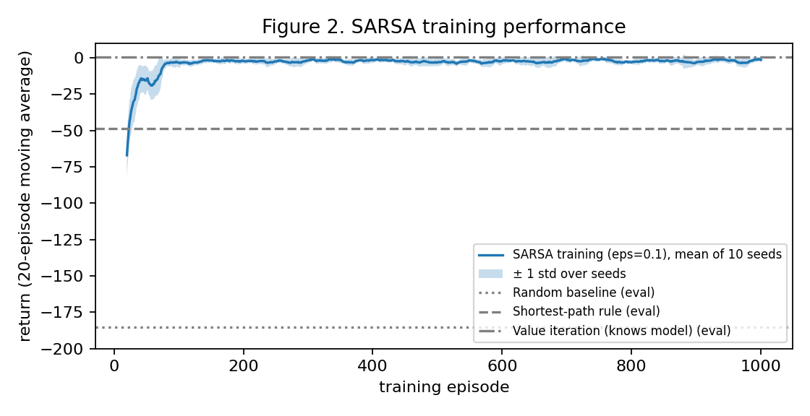
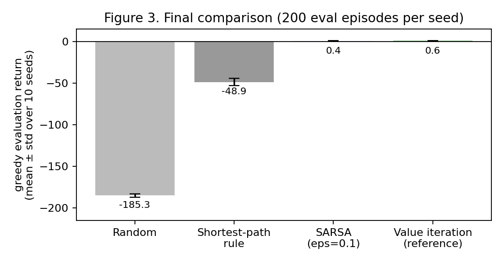
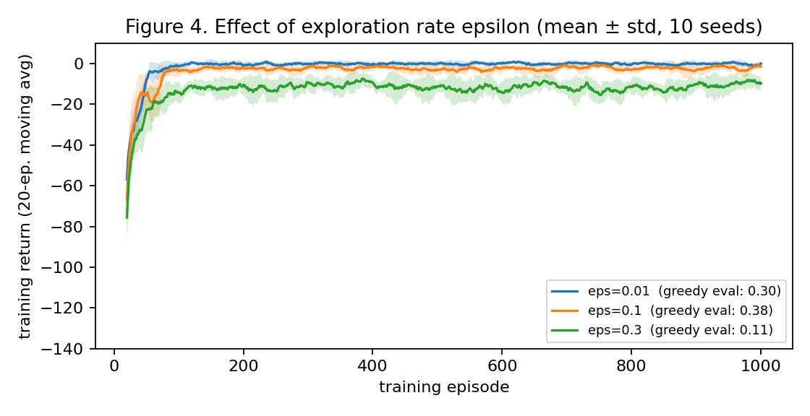

Task. A small courier robot delivers medicine on one hospital floor, from the pharmacy (S) to a ward (G). The floor is a 5×5 grid of cells. Four cells have a wet floor (H). The floor is slippery: with probability 0.1 the robot moves sideways instead of where it intended. If the robot enters a wet cell, it falls, receives a large penalty and must restart from the pharmacy. Decision-maker: the robot's navigation controller, which chooses one move (up, right, down, left) at every step. Desired outcome: reach the ward in as few steps as possible while avoiding wet cells.
Why the decisions are sequential. Each move changes the robot's position, and the position determines which moves are safe and how far the goal is. One bad move next to a wet cell undoes all earlier progress. The goal reward arrives only at the end, so the robot has to assign credit to early moves that made the later success possible. What must be learned from experience: the robot is not given the slip probability or the hazard locations. Through trial and error it must learn how good each move is in each cell over the long run, the action value Q(s, a).
Non-RL alternative. If the map, the hazards and the slip probability are known exactly, dynamic programming (value iteration) or a planner such as A* computes the optimal route directly, without any trial and error. I implement value iteration as a reference (Section 5). That approach is preferable when an accurate model exists or when mistakes are expensive, because a real robot should not fall hundreds of times while learning. RL is useful when the model is unknown or changes (a new wet area, a different floor), and experience can be collected safely, for example in a simulator like this one.
Application link. I am interested in ML for healthcare. Hospital logistics, such as moving medicine and samples between wards, is a real sequential decision problem under uncertainty. This prototype is a deliberately tiny, simulated version of it.
| Element | Definition |
|---|---|
| State S | Robot cell (row, col), 25 cells and states 0–24. G is terminal. H cells are never occupied, because entering one teleports the robot to S. That leaves 20 decision states. |
| Actions A | {up, right, down, left} in every state. |
| Transitions | The robot moves in the intended direction with probability 0.9 and in each perpendicular direction with probability 0.05. Moving into a wall leaves it in place. Entering H sends it to S. Entering G ends the episode. |
| Reward R | −1 per step (time cost). +10 when entering G, instead of −1. −10 when entering H, together with the reset to S. |
| Start / end | Start at S = (4,0). The episode terminates at G = (0,4) or is truncated after 100 steps (time limit). |
| Discount γ | 0.99. Episodes are short (an optimal route takes about 9 steps, and 0.999 ≈ 0.91), so the goal reward 9 steps ahead keeps almost its full weight. The −1 step cost, not γ, is what pushes the robot toward short routes. γ < 1 also keeps values finite for policies that never reach G. |
Deterministic or stochastic. The environment is stochastic because of the slip. The behaviour policy during training is stochastic (ε-greedy). The evaluated policy is deterministic (greedy) except for random tie-breaking. The task is episodic.
Markov assumption. In the simulator the next cell and the reward depend only on the current cell and the action, not on how the robot got there, so the cell is a Markov state for the movement dynamics. The state is an approximation in one respect: the elapsed time t is not part of the state, while the 100-step limit depends on it. Near the limit, the optimal action could in principle depend on how many steps remain. Optimal routes need about 9–10 steps, far below 100, so the effect is negligible here. A real robot would also lack information that a cell index does not capture, such as its heading, moving people, and whether a floor is drying.
Transition examples (Figure 1a). (i) s = (4,0), a = right, no slip (p = 0.9) → r = −1, s' = (4,1). (ii) s = (4,1), a = up, no slip → the robot enters H at (3,1) → r = −10, s' = (4,0) = S, and the episode continues.

I use SARSA, an on-policy temporal-difference control method (Sutton & Barto, Sec. 6.4). After every step the agent updates
What is estimated and how it is used. The table Q (25 × 4) estimates action values. During training, actions come from an ε-greedy policy: with probability ε a random action (exploration), otherwise argmaxa Q(s, a) with random tie-breaking (exploitation). For evaluation the agent acts purely greedily (ε = 0) and does not learn. Q starts at 0. Almost all true returns are negative, so untried actions look better than tried ones, which adds exploration early on.
Baselines. (1) Random: a uniformly random action at every step. (2) Shortest-path rule: a random choice among the moves that reduce the Manhattan distance to G. This is the obvious hand-written rule, and it ignores both hazards and slip. Reference: value iteration on the true model, which is the non-RL alternative from Section 1. It shows how close SARSA gets to optimal, but it is not a fair competitor, because it is given the model.
pip install -r requirements.txt, then python run_experiments.py. This regenerates every number and figure in this report (see README).| Method (greedy evaluation, 10 seeds × 200 episodes) | Return | Success rate | Episode length |
|---|---|---|---|
| Random baseline | −185.34 ± 2.31 | 0.103 ± 0.013 | 95.5 ± 0.8 |
| Shortest-path rule baseline | −48.90 ± 4.28 | 0.996 ± 0.003 | 21.8 ± 1.1 |
| SARSA (ε = 0.1) | 0.38 ± 0.34 | 1.000 ± 0.000 | 9.6 ± 0.2 |
| Value iteration (knows the model; reference) | 0.63 ± 0.23 | 1.000 ± 0.000 | 9.4 ± 0.2 |
Table 1. Final comparison, mean ± std over 10 seeds.


Interpretation. SARSA reaches the ward in every evaluation episode in about 9.6 steps, with return 0.38 ± 0.34. The random baseline mostly runs out of time (return −185.3, 10% success). The shortest-path rule almost always arrives (99.6%) but needs 21.8 steps and scores −48.9, because the direct diagonal route passes the wet cells (3,1), (2,2) and (1,3). It falls repeatedly and restarts. SARSA learned instead to take the safer route along the bottom row and up the right column (Figure 1b), which is the same route that value iteration finds optimal (Figure 1c). The remaining gap to value iteration (0.38 vs 0.63, about a quarter of a reward point per episode) is small compared with the run-to-run std. Across seeds, the greedy SARSA action matches the optimal action in 88.5% of the 20 decision states. The differences are in cells away from the route, such as (3,0) in Figure 1b. Those cells are rarely visited, and they do not affect return because the greedy route never enters them. Figure 2 shows that learning is fast: training return rises from about −70 to about −2 within ~100 episodes and then stays flat. Training return stays below evaluation return because 10% of the actions are random.
| ε | Greedy eval return | Training return, last 100 episodes | Policy agreement with optimal |
|---|---|---|---|
| 0.01 | 0.30 ± 0.36 | −0.16 ± 0.76 | 79.0% |
| 0.1 | 0.38 ± 0.34 | −2.01 ± 1.10 | 88.5% |
| 0.3 | 0.11 ± 0.98 | −10.10 ± 2.54 | 95.0% |
Table 2. Effect of ε (mean ± std over 10 seeds). Policy agreement is the fraction of the 20 decision states where the greedy SARSA action equals the value-iteration action, averaged over seeds.

What changed and why. Training return gets much worse as ε grows, from −0.16 to −10.10. With ε = 0.3, almost a third of the moves are random, and next to wet cells a random move often costs −10. More exploration also visits more states, so the policy agreement with the optimal policy rises from 79% to 95%. Greedy evaluation return, however, barely changes between ε = 0.01 and ε = 0.1 (0.30 vs 0.38, well within one std). Even ε = 0.01 learns the main route, because the zero initialisation of Q already forces early exploration. Wrong actions in rarely visited states do not matter if the greedy route never goes there. ε = 0.3 gives the lowest and the least stable evaluation return (std 0.98), which Section 6 explains.
A failure. With ε = 0.3, seed 6 scored −2.66 in greedy evaluation, and the robot fell onto a wet cell in 15% of its evaluation episodes. The cause is a wrong choice at cell (4,3): SARSA preferred up (Q = −0.90) over right (Q = −1.81), while value iteration prefers right. SARSA is on-policy, so it learns the value of the policy it actually follows, including 30% random moves. It therefore picks the route that is best while exploring heavily, and that route need not be best when the robot later acts greedily. Constant α = 0.1 also makes the estimates noisy, because every slip shifts Q. This is the same effect as in the Cliff Walking example of Sutton & Barto (Example 6.6). The lesson is that a single good run with a large ε would have been misleading, and multiple seeds exposed the failure.
Limitations. The map is tiny and fixed, so the agent memorises one floor and would not transfer to another. The rewards (−10 for a fall, +10 for delivery) are hand-picked, and a different penalty could change the preferred route. The slip model is invented. The state ignores time, people and partial observability. 1000 episodes of trial and error would be unacceptable on a real robot, so in practice the learning would happen in a simulator.
Next step. With more time I would (1) decay ε and α over training (a GLIE schedule) and test whether the ε = 0.3 failure disappears, (2) compare against Q-learning, which learns the value of the greedy policy directly, and (3) randomise the hazard positions between episodes to measure generalisation.
I used Claude Code (Anthropic, Claude Opus 5.5) to help write the environment, the SARSA, baseline and value-iteration code, and the plotting script, and to draft the text of this report. I chose to submit this project, read all of the code, and checked that every number in the report comes from results/summary.json produced by run_experiments.py. My own verification: I went through the code part by part and explained each part in my own words: the environment, the 4 actions, the rewards (−1, +10, −10), reset and step, the zero-initialised Q-table, greedy_action, epsilon_greedy, the random baseline, and the SARSA update. While doing this I found and corrected three mistakes in my own understanding. (1) I first wrote the update as Q + α(r − Q). That is only the terminal case; the full update also contains γ·Q(s′, a′). (2) I first thought SARSA uses the best next action. In fact it uses the action a′ that ε-greedy really chose, and taking the best next action (max) is what Q-learning does. (3) I first thought step is the agent using the Q-table. In fact step is the environment: the agent chooses the action, and the environment applies it and returns the next state and the reward.
No external RL code was used. The environment was written from scratch for this project.
| Date / week | Activity (lab, exercise, Coursera module, notes, independent study) | Evidence |
|---|---|---|
| Before the course | Independent study: GRPO and DPO, RL-style fine-tuning of LLMs. The agent is the LLM, the action is the generated text, and training uses preferred vs. rejected answers. | Self-study (no certificate) |
| From Sep 13, 2026 | Coursera Fundamentals of Reinforcement Learning (University of Alberta, Course 1 of the RL Specialization). Completed: Module 1 (Welcome) and Module 2 (K-armed bandits). Module 3 (MDPs) in progress: most lessons done, practice assignment "MDPs" submitted with grade 83.33%; the peer-graded assignment "Describe Three MDPs" is not submitted yet. Modules 4–5 (value functions and Bellman equations, dynamic programming) not started yet. Our course did not set deadlines for Coursera, so I have been going through it slowly. | Screenshot below (taken Oct 26, 2026) |
| Oct 19–26 | This midterm project: environment, SARSA, baselines, 10-seed experiments, ε study | This report and code |
What became clearer. Working through the Coursera course, I understood what reinforcement learning is: an agent interacts with an environment, takes actions and receives rewards, and learns from this experience instead of from labelled examples. I learned what an MDP and the Bellman equation are, that dynamic programming (value iteration) needs the full model, and that SARSA and Q-learning learn without it. Building my own environment and training an agent made this concrete. I understood that the action with the maximum Q is only the best one according to the agent's current estimate, and that with ε = 0.1 the agent takes a random action 10% of the time to explore. I also separated who does what: the agent chooses the action, and the environment's step returns the next state and the reward. Finally, I saw why Q-tables only work for small problems: a self-driving car has far too many situations (speed, traffic lights, other cars) for a table, so it needs a state vector and a neural network, which is deep RL.
What is still difficult. The exact difference between SARSA and Q-learning. I mixed it up more than once: I thought Q-learning chooses the optimal action, but both methods choose actions with ε-greedy. The difference is only in the update target, Q(s′, a′) for SARSA and max Q(s′, ·) for Q-learning. To understand it fully, I want to implement Q-learning on the same grid and compare the routes.